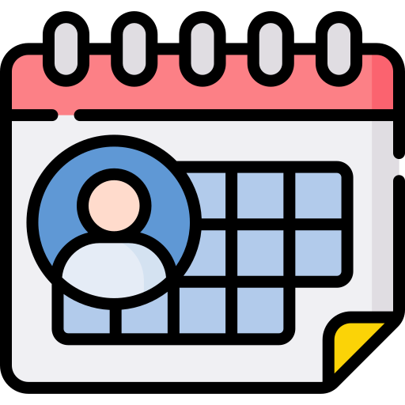
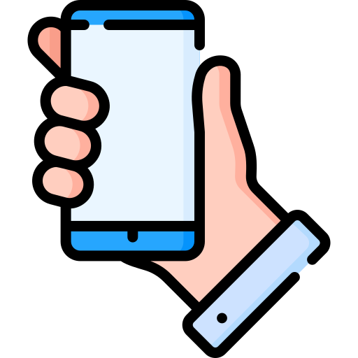

(Direto do seu celular)
O Vitally é o aplicativo para solicitar e acompanhar consultas na rede pública de saúde: agendamento fácil, sem precisar ir ao posto só para tentar conseguir um horário.

Veja os horários disponíveis, solicite sua consulta e cancele quando precisar, sem burocracia.

A secretaria organiza a agenda, confirma os agendamentos e acompanha o status de cada consulta.

Cada usuário acessa apenas o que é do seu perfil e os dados ficam protegidos.
Agendar consulta em posto de saúde público costuma significar filas presenciais, horários limitados e dificuldade de locomoção. Muita gente precisa sair cedo, faltar ao trabalho ou aos estudos, ou depender de terceiros só para marcar um atendimento.
O Vitally leva esse agendamento para o celular: simples, acessível e pensado para quem mais precisa.
Solicite sua consulta de onde estiver e deixe o atendimento do posto mais organizado para todos.

Menos filas

Mais comodidade
Mais organização
 App Store
App Store